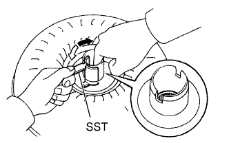
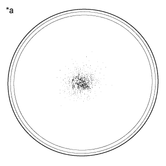
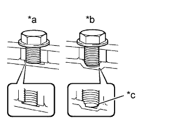
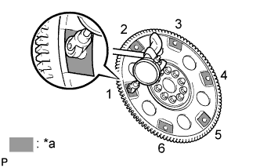

TORQUE CONVERTER CLUTCH AND DRIVE PLATE > INSPECTION |
| 1. INSPECT TORQUE CONVERTER CLUTCH ASSEMBLY |
|  |
Inspect the 1-way clutch.
Install SST to the inner race of the 1-way clutch.
Press on the serrations of the stator with a finger and rotate the stator.
Check that the stator rotates smoothly when turned clockwise and locks when turned counterclockwise.
 | Free |
 | Lock |
|  |
Determine the condition of the torque converter clutch.
| *a | Sample showing maximum allowable amount of powder in ATF |
Check that the following conditions are met:
Replace the ATF in the torque converter clutch.
If the ATF is discolored and/or has a foul odor, stir the ATF in the torque converter clutch thoroughly and drain the ATF with the torque converter facing upward.
|  |
Prevent deformation of the torque converter clutch and damage to the oil pump gear.
| *a | CORRECT |
| *b | INCORRECT |
| *c | Bottom is damaged |
When any marks due to interference are found on the end of the bolt for the torque converter clutch and on the bottom of a bolt hole, replace the bolt and torque converter clutch.
All of the bolts should be the same length.
Make sure no spring washers are missing.
| 2. INSPECT DRIVE PLATE |
Check the drive plate for damage.
|  |
Set up a dial indicator and measure the runout of the 6 portions around the torque converter clutch contact surfaces.
| *a | Measuring Point |